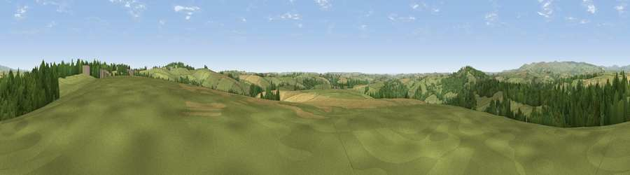

Viewpoint near Moreleigh
#5916 in England · top 15% of its area beats it · near MoreleighWhere it is
The exact computed spot (SX 74825 52225). Click the marker for map links.
The view, rendered

A 360° render of this exact spot computed from the terrain model, tree cover and land cover — summer colours, afternoon light, calibrated against photographs of famous viewpoints. Real trees, hedges and buildings will differ in detail.
The panorama
Grey silhouette: terrain skyline in each direction (720 bearings, Earth curvature and refraction included). Dashed green: skyline with trees (+15 m) and buildings (+8 m) as obstacles. Blue strip: how far the ground is visible on each bearing.
Where the view opens
Wedge length = distance to the farthest visible ground on that bearing (vegetation-aware). Rings at 10, 25 and 50 km.
What fills the view
60% grassland · 27% woodland · 13% cropland
Angular shares of the visible panorama (visual magnitude), not map area. Landscape diversity 0.42 (0–1 Shannon).
Key numbers
More beautiful places nearby
The staircase of upgrades: each row has a higher view potential than everything closer. Driving times are estimates from straight-line distance, calibrated against real road routing — check an actual route before setting out.
| Place | Direction | Drive | Score |
|---|---|---|---|
| Viewpoint near Moreleigh | NE · 2 km | ~6 min | 74.0 |
| Viewpoint near Cornworthy | E · 9 km | ~18 min | 75.2 |
| Viewpoint near Slapton | SE · 10 km | ~19 min | 75.7 |
| Viewpoint near Moorhaven Village | NW · 10 km | ~20 min | 79.2 |
| Ugborough Beacon | NW · 11 km | ~20 min | 79.5 |
| Western Beacon | WNW · 11 km | ~21 min | 81.9 |
| Beacon Hill | NE · 15 km | ~26 min | 82.3 |
| Viewpoint near Hope | SSW · 15 km | ~27 min | 84.4 |
50.35659, -3.76102 · source: screening · position refined by local search. Computed location — check access rights before visiting.